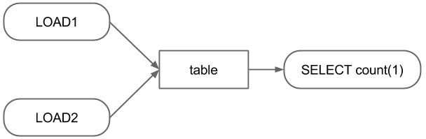

Job Configuration DSL (PBC)¶
PBC is a ruby-based DSL to describe batch jobs with dependency. Jobs in this workflow scheduler can be defined in a set of key value pairs with a job type (called command). PBC enables us to write common key values in one space and simplifies batch configurations. In addition, the DSL are designed to be extensible, so that new commands can be incorporated.
The below is a ‘Hello World’ example.
% cat test.pbc
sh{
name 'test'
commands ["echo 'hello world' > /tmp/out.txt"]
}
% ./bin/patriot execute 2015-04-01 test.pbc
% cat /tmp/out.txt
hello world
The initial target of this scheduler is daily batch jobs and the script takes a date (or range of dates) as an argument. The date given as the argument can be used via the variable ‘_date_’. For instance,
% cat test.pbc
sh{
name 'test'
commands ["echo 'hello world (#{_date_})' > /tmp/out.txt"]
}
% ./bin/patriot execute 2015-04-01 test.pbc
% cat /tmp/out.txt
hello world (2015-04-01)
Configuring Dependency¶
Consider above workflow as an example, in which the SELECT statement should be executed after two LOAD statements.
This workflow can be defined in PBC as follows.
sh{
produce ["table_#{_date_}"]
name "load1_#{_date_}"
commands ["hive -e 'LOAD DATA INPATH \'path_to_source1\' INTO TABLE table PARTITION (dt = \'#{_date_}\', type = \'1\')"]
}
sh{
produce ["table_#{_date_}"]
name "load2_#{_date_}"
commands ["hive -e 'LOAD DATA INPATH \'path_to_source2\' INTO TABLE table PARTITION (dt = \'#{_date_}\', type = \'2\')"]
}
sh{
require ["table_#{_date_}"]
name "select_#{_date_}"
commands ["hive -e 'SELECT count(1) FROM table WHERE dt = '#{_date_}' > result_#{_date_}"]
}
Simplifying Configurations Using Job Groups¶
In the above example, the two LOAD jobs have same product. This can be consolidated by using job_group as follows.
job_group{
produce ["table_#{_date_}"]
sh{
name "load1_#{_date_}"
commands ["hive -e 'LOAD DATA INPATH \'path_to_source1\' INTO TABLE table PARTITION (dt = \'#{_date_}\', type = \'1\')"]
}
sh{
name "load2_#{_date_}"
commands ["hive -e 'LOAD DATA INPATH \'path_to_source2\' INTO TABLE table PARTITION (dt = \'#{_date_}\', type = \'2\')"]
}
}
sh{
require ["table_#{_date_}"]
name "select_#{_date_}"
commands ["hive -e 'SELECT count(1) FROM table WHERE dt = '#{_date_}' > result_#{_date_}"]
}
Since PBC is an Ruby-internal DSL, this example can be written more concisely.
job_group{
produce ["table_#{_date_}"]
["1", "2"].each do |i|
sh{
name "load#{i}_#{_date_}"
commands ["hive -e 'LOAD DATA INPATH \'path_to_source#{i}\' INTO TABLE table PARTITION (dt = \'#{_date_}\', type = \'#{i}\')"]
}
end
}
sh{
require ["table_#{_date_}"]
name "select_#{_date_}"
commands ["hive -e 'SELECT count(1) FROM table WHERE dt = \'#{_date_}\'' > result_#{_date_}"]
}
Implementing and Using Custom Commands¶
Until now, the every batch configurations need ‘hive -e’ and have cumbersome quotes and escapes. These issues can be removed by using custom command.
A custom command can be developed by implementing only 3 methods in a sub class of Patriot::Command::Base together with setting command name and its attributes. The three methods are
- job_id which returns an identifier of the job in String.
- description which builds a string expressing what this job does.
- execute in which the process of the job is implemented
The command name is an expression used in the PBC and the attributes are used for implementing the above methods. The command name and the attributes can be set by using class macros, declare_command_name and command_attr, respectively.
Below is a custom command example which executes a Hive LOAD statement.
# writtern in hive_load_command.rb
class HiveLoadCommand < Patriot::Command::Base
# define command name
declare_command_name :hive_load
# set attributes of this command
# the attributes can be available as instance variables
command_attr :table, :partition, :source
include Patriot::Util::System # utility for executes external scripts
# create job_id of this job
def job_id
job_id = "#{command_name}_#{@table}" # commond_name is defined in the super clas
return job_id if @partitions.nil?
return "#{job_id}_#{partitions.map{|k,v| "#{k}_#{v}"}.join(",")}"
end
# return what this job do
def description
return build_load_statement
end
def execute
cmd = "hive -e \"#{build_load_statement}\""
execute_command(cmd)
end
def build_load_statement
hql "LOAD DATA INPATH '#{@source}' INTO TABLE #{table}"
return hql if @partitions.nil?
return "#{hql} PARTITION (#{@partitions.map{|k,v| "#{k} = '#{v}'"}.join(", ")})"
end
end
Assuming the results of the SELECT statement needs to be stored other database (e.g. relational database or key-value store), a command for the such jobs could be like below.
# writtern in hive2db_command.rb
class Hive2DBCommand < Patriot::Command::Base
# define command name
declare_command_name :hive2db
# set attributes of this command
# the attributes can be available as instance variables
command_attr :name, :db, :table, :query
include Patriot::Util::System # utility for executes external scripts
# create job_id of this job
def job_id
return "#{command_name}_#{@name}_#{@db}_#{@table}"
end
# return what this job do
def description
return @query
end
def execute
# execute_command return path to a file
# in which the content of stdout is stored.
so = execute_command(cmd)
File.open(so) do |results|
results.each do |result|
# insert result to @db.@table
end
end
end
end
These command can be integrated by putting file in the plugins directory and set init.rb and patriot.ini to load the commands.
mkdir -p ${INSTALL_DIR}/plugins/my_custom_commands/lib
cp hive_load_command.rb ${INSTALL_DIR}/plugins/my_custom_commands/lib
cp hive2db_command.rb ${INSTALL_DIR}/plugins/my_custom_commands/lib
vi ${INSTALL_DIR}/plugins/my_custom_commands/init.rb
cat ${INSTALL_DIR}/plugins/my_custom_commands/init.rb
require 'patriot'
require 'hive_load_command'
require 'hive2db_command'
vi ${INSTALL_DIR}/config/patriot.ini
...
plugins=my_custom_commands,patriot-mysql2-client
...
By using the custom commands, the configurations can be written as below.
job_group{
produce ["table_#{_date_}"]
["1", "2"].each do |i|
hive_load{
table 'table'
partition 'dt' => _date_, 'type' => i
source "path_to_source#{i}"
}
end
}
hive2db{
require ["table_#{_date_}"]
name "select_#{_date_}"
db 'dbname'
table 'tablename'
query "SELECT count(1) FROM table WHERE dt = '#{_date_}'"
}